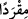
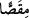
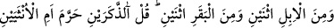
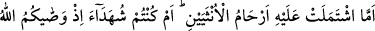
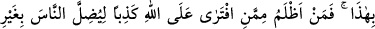
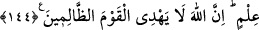
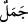

yavruları mı haram etti? Eğer doğru iseniz bana ilimle söyleyin.
“Sekiz çifti” yaratan da O’dur. Eş (zevc), kendi cinsinden berâberinde eşleştiği başka
biri olana denir. Böylece ikisinden nesil meydana gelir. Dolayısıyle birbiriyle arkadaş
ve yoldaş olan ikiliye eş (zevc) değil, çift (zevcân) denir. Buna göre Arapça’da mesela
makas için “
” veya “
” kelimeleri kullanılır. Çünkü bunlar, birbirini
tamamlayan iki parçadan ibârettir.
“Sekiz çift”ten maksat, dört türdür. Çünkü dört tür, çiftleri dikkate alındığında sekiz
olur.
“Koyundan iki” yani, koyundan iki eş yarattı ki koç ve koyundur. Koyun, (küçükbaş)
hayvanlar içinde yünü ile tanınır. “Keçiden iki” yani, keçiden de iki eş yarattı ki teke ve
çepiçtir. Keçi, (küçükbaş) hayvanlar içinde, kılı ile tanınır.
Ey Muhammed (s.a.), onlara “de ki:” Sizin haram kılındığını iddia ettiğiniz gibi bu iki
tür hayvandan Allah “iki erkeği” yani koçu ve tekeyi “mi haram etti,” yoksa “iki dişiyi
mi?” yani bunların dişisi olan koyun ve keçiyi mi? “Yoksa her iki dişinin rahimlerinde
bulunanları” erkek olsun dişi olsun bunların karınlarında taşıdıkları yavruları mı?”
“Eğer” Allah Teâlâ ’nın bunları haram kıldığı iddiasında “doğru iseniz bana bilgi
ile” Allah Teâlâ’nın zikredilenlerden birini haram kıldığına dâir O’nun tarafından
gönderilen bir Kitab’dan ya da peygamberlerin haberlerinden bilinen bir emre
dayanarak “haber verin.”
144. Deveden de iki, sığırdan da iki (yarattı). De ki: O bunların erkeklerini mi,
dişilerini mi, yoksa bu iki dişinin rahimlerinde bulunan yavruları mı haram kıldı?
Yoksa Allah’ın size böyle vasiyet ettiğine şâhit mi oldunuz? Bilgisizce insanları
saptırmak için Allah’a karşı yalan uydurandan kim daha zalimdir! Şüphesiz Allah o
zalimler topluluğunu doğru yola iletmez.
“Ve deveden iki” Yani deveden de iki eş yarattık, ki bunlar cemel (__WORD__) ve nâka (
)
dır. “ve sığırdan iki” Erkek ve dişi olmak üzere bir çift yarattık.
Allah Teâlâ, yine müşrikleri cevap vermekten aciz bırakır tarzda şöyle buyuruyor:
“De ki:” bunlardan, yani deve ve sığırdan “iki erkeği mi haram etti, iki dişiyi mi,
yoksa iki dişinin rahimlerinde bulunanları mı?”
Bu sorunun mânâsı, Allah’ın burada sayılan dört tür hayvandan erkek, dişi ve dişinin